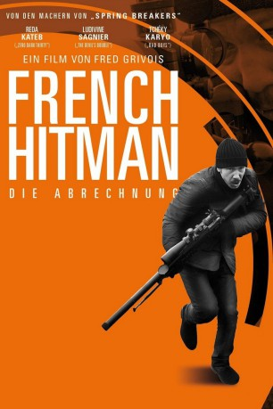

#3336 French Hitman
Alternativ: Through the Air (Englischer Titel)
 
 IMDB-Wertung: 5.8 / 10
IMDB-Wertung: 5.8 / 10  Metascore: 0
Metascore: 0 
Vincent (Reda Kateb), ein Meister im Sportschießen, führt mit seiner Frau Delphine (Ludivine Sagnier) und seiner Tochter ein ruhiges Leben. Auf seinen Schultern lastet jedoch ein schweres Gewicht, denn die Familie ist hoch verschuldet und die Geldprobleme bringen den gesetzestreuen Familienvater nun in einen moralischen Zwiespalt: Er erhält ein verlockendes Angebot, mit dem er bei erfolgreicher Ausführung alle finanziellen Schwierigkeiten auf einen Schlag loswerden, sich allerdings auch auf kriminelle Machenschaften einlassen würde. Denn bei Vincents Auftraggeber handelt es sich um Mitglieder des organisierten Verbrechens, die den Luftgewehr-Champion für eine tödliche Mission engagieren wollen...
Jahr: 2015
Dauer: 98 Minuten
FSK:
Land: Frankreich Studio: GaumontTonspuren:
Untertitel:
Auflösung: 1080p (1920x808) Größe: 3205 MB
Genre: Drama
Regisseur: Fred Grivois
Drehbuch: Gary Conway
Soundtrack:
Darsteller:
 Reda Kateb als Vincent Cavelle
Reda Kateb als Vincent Cavelle Ludivine Sagnier als Delphine Cavelle
Ludivine Sagnier als Delphine Cavelle Tchéky Karyo als Armand Cavelle
Tchéky Karyo als Armand Cavelle- Laure de Clermont-Tonnerre als Valérie
- Emmanuel Bonami als Le tueur
- Thomas Bidegain als Cible 1
- Walter Shnorkell als Cible 3
 Sabine Crossen als La femme blonde
Sabine Crossen als La femme blonde Damien Bonnard als Ouvrier chantier
Damien Bonnard als Ouvrier chantier- Sebastien Sisak als Le tireur de carabine de tir sportif , uncredited
 Johan Heldenbergh als Renaud
Johan Heldenbergh als Renaud- Pascal Demolon als JP
- Blanche Hemada Costoso als Alexia Cavelle
- Sylvie Degryse als Evelyne
- Hubert Saint-Macary als Le voisin d'Armand
- Patrice Guillain als Ours
- Lahcen Elmazouzi als Le Turc
- Milo Chiarini als Michel le marrant
- Matteo Capelli als Le moustachu
- Manuel Guillot als Philippe
- Édith Le Merdy als La prostituée d'Armand
- Jean-Philippe Grivois als Le médecin
- Benjamin Baclet als Forain stand de tir
- Romain Bisseret als L'expert
- Stella Mancini als Cible 2
- Pascal Provost als Collègue Vincent 1
- Cyril Damet als Collègue Vincent 2
- Philippe Patois als Collègue Vincent 3
- Christophe Davis als Collègue Vincent 4
- Séverine Poupin als Secrétaire bureau expert
- Damien Charbit als Apprenti chantier
- Negar Hashemi als Guide bateau-mouche
- Philippe Sévenian als Porte-flingue 4
- Youssef Sahraoui als Porte-flingue 5
- Camille Kouchner als Séverine
- Jehon Gorani als Bob
- Kurt Standaert als German businessman
- Gwendolyn Gourvenec als La vendeuse italienne , uncredited
Datei: X:\2015(A-F)\French Hitman (2015, FSK, 1920x808).mkv seit 15.03.2016
Festplatte: HD 2015(A-Z)
 Es gibt insgesamt 143 Filme in der Gruppe '2015(A-F)'
Es gibt insgesamt 143 Filme in der Gruppe '2015(A-F)'